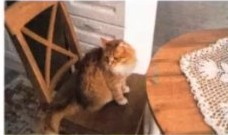

HSK 1 练习册 · Workbook Pelajaran 8
| No. | Pilihan Suku Kata A | vs | Pilihan Suku Kata B |
|---|---|---|---|
| ( 1 ) | vs | ||
| ( 2 ) | vs | ||
| ( 3 ) | vs | ||
| ( 4 ) | vs | ||
| ( 5 ) | vs | ||
| ( 6 ) | vs | ||
| ( 7 ) | vs | ||
| ( 8 ) | vs |
| No. | Pilihan A | Pilihan B | Pilihan C |
|---|---|---|---|
| ( 1 ) | |||
| ( 2 ) | |||
| ( 3 ) | |||
| ( 4 ) |
| 笔形 Stroke Shapes |
名称 Stroke Names |
运笔方向 Stroke Directions |
描写 Stroke Tracing |
|---|---|---|---|
| 一 |
一
➔
Kiri ke Kanan
|
一
一
一
一
一
一
|
|
| 丨 |
丨
↓
Atas ke Bawah
|
丨
丨
丨
丨
丨
丨
|
| 笔顺规则 Stroke Order Rule |
例字 Example Character |
|---|---|
|
先横后竖
Horizontal preceding vertical (Dahulukan garis mendatar, baru garis tegak lurus)
|
